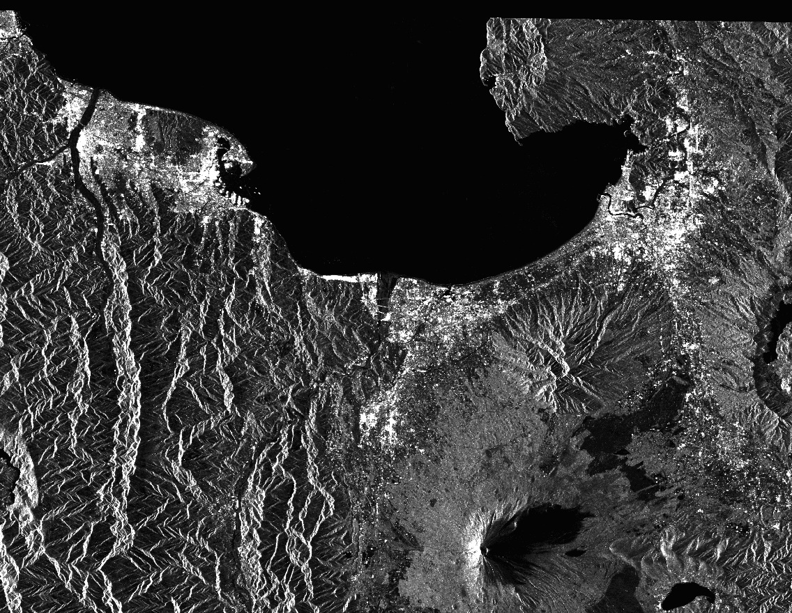

| ALOS Deskewing |
|
For ALOS L1.1 data, the annotated times are not zero Doppler times, i.e. the data is distributed in squinted geometry. Therefore, the data generally needs to be deskewed to transfer the data into a zero Doppler like geometry before applying standard SAR processing.
The following
parameter is used by the Operator:
Below is an example of a deskewed ALOS product in which all the pixels have been adjusted to a more zero Doppler like geometry. Notice the gap along the top of the image.
